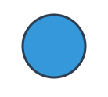

5 Elementos Gráficos SVG
SVG (Scalable Vector Graphics) define gráficos en formato XML que no pierden calidad al hacer zoom.
1. La etiqueta <circle> (Círculo)
Caso de Uso:
Se utiliza para dibujar círculos. Es muy útil para crear iconos de estado, puntos en gráficas de dispersión o elementos decorativos redondeados.
Ejemplo de Código:
<svg width="100" height="100" xmlns="http://www.w3.org/2000/svg">
<!-- cx, cy: centro. r: radio. fill: relleno -->
<circle cx="50" cy="50" r="40" fill="#3498db" stroke="#2c3e50" stroke-width="3" />
</svg>
Resultado en el Navegador:

Más información:
W3C: Elemento circle
2. La etiqueta <rect> (Rectángulo)
Caso de Uso:
Dibuja rectángulos o cuadrados. Se puede usar para crear fondos de botones, barras en gráficos de barras o marcos.
Ejemplo de Código:
<svg width="150" height="80" xmlns="http://www.w3.org/2000/svg">
<!-- x, y: posición inicial. rx: redondeo de esquinas -->
<rect x="10" y="10" width="130" height="60" rx="10" fill="#e74c3c" />
</svg>
Resultado en el Navegador:

Más información:
W3C: Elemento rect
3. La etiqueta <line> (Línea simple)
Caso de Uso:
El elemento más básico para dibujar una línea recta entre dos puntos. Útil para separadores, ejes en gráficas o conectar elementos visuales.
Ejemplo de Código:
<svg width="200" height="50" xmlns="http://www.w3.org/2000/svg">
<!-- x1,y1: punto inicio. x2,y2: punto final -->
<line x1="10" y1="10" x2="190" y2="40" stroke="#27ae60" stroke-width="5" stroke-linecap="round"/>
</svg>
Resultado en el Navegador:
Más información:
W3C: Elemento line
4. La etiqueta <text> (Texto SVG)
Caso de Uso:
Permite añadir texto dentro de un gráfico vectorial. Este texto es parte del gráfico, se puede escalar y rotar sin perder calidad.
Ejemplo de Código:
<svg width="200" height="60" xmlns="http://www.w3.org/2000/svg">
<text x="10" y="40" font-family="Arial" font-size="30" fill="#8e44ad" stroke="black" stroke-width="1">
Hola SVG!
</text>
</svg>
Resultado en el Navegador:

Más información:
W3C: Elemento text
5. La etiqueta <path> (Camino complejo)
Caso de Uso:
Es el elemento SVG más potente. Permite dibujar cualquier forma compleja mediante una serie de comandos. Es la base de la mayoría de iconos vectoriales.
Ejemplo de Código:
<svg width="100" height="100" xmlns="http://www.w3.org/2000/svg">
<!-- Dibuja un triángulo simple -->
<path d="M 50 10 L 90 90 L 10 90 Z" fill="#f39c12" stroke="black" stroke-width="2"/>
</svg>
Resultado en el Navegador:

Más información:
W3C: Elemento path